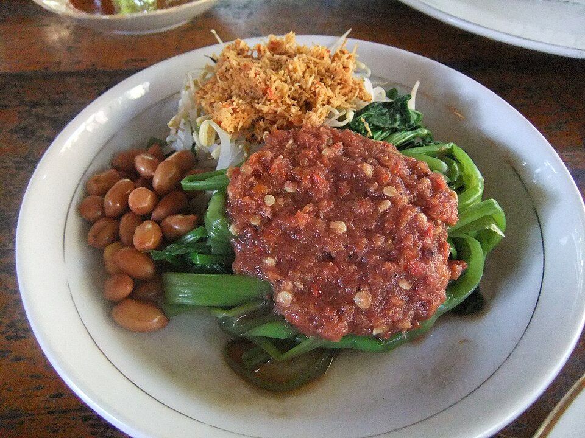

Home
Pelecing Kangkung

Pelecing Kangkung is a traditional dish from the island of Lombok, West Nusa Tenggara, Indonesia. It's simple, easy to make, and packed with fresh ingredients. The star of the dish is water spinach, served with Lombok's signature chili sauce, beberok. Curious how to make it at home? Here's the recipe:
Ingredients
- 1 bunch water spinach (kangkung), about 150-250 grams
- 2 medium tomatoes
- 5-10 bird's eye chilies (Adjust to your spice preference. The more chilies, the spicier the dish.)
- Salt to taste
- ½ thumb-sized piece of shrimp paste (terasi), toasted
- MSG (optional)
Optional sides
- Rice crackers (kerupuk)
- Fried egg
- Blanched bean sprouts
Steps
Prepare the water spinach:
- Trim off the tough ends of the water spinach stems, keeping the tender stems and leaves.
- Bring a pot of water to a boil. Add the water spinach and blanch until wilted.
- Drain and let it cool slightly. Once cool enough to handle, tear each stem into 2-4 pieces using your hands.
Make the beberok sambal:
- In a mortar and pestle or blender, combine tomatoes, chilies, salt, toasted shrimp paste, and MSG (if using).
- Grind or blend until smooth and well combined.
How to serve
- Arrange the torn water spinach on a plate.
- Generously pour the beberok sambal over the top.
- Add any optional sides you like, such as rice crackers, fried egg, or bean sprouts.
- Pelecing Kangkung is often enjoyed with grilled chicken or fish and a side of steamed rice (Personal recommendation: steamed rice, grilled chicken, and rice crackers.)